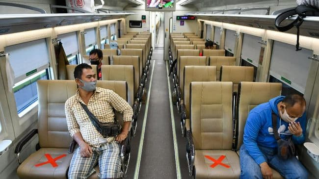

PT Kereta Api Indonesia (Persero) atau KAI menyampaikan penjelasan mengenai syarat naik kereta api di masa perpanjangan PPKM mulai 31 Agustus 2021. VP Public Relations KAI Joni Martinus menjelaskan bahwa persyaratan naik kereta api jarak jauh mulai 31 Agustus 2021 masih belum berubah. Demikian juga mengenai syarat perjalanan naik kereta api lokal, masih diberlakukan seperti aturan yang diterapkan sebelumnya.
KAI masih mengacu pada SE Kemenhub No 58 Tahun 2021 dan SE Satgas Penanganan Covid-19 No 17 Tahun 2021. Berdasarkan aturan tersebut, syarat bepergian naik kereta api jarak jauh untuk level 3 dan level 4 tetap sama dan untuk penggunaan Surat Tugas atau sejenisnya bagi KA Lokal masih diberlakukan.
Berikut persyaratan perjalanan menggunakan Kereta Api jarak jauh :
- Menunjukkan kartu vaksin minimal vaksinasi Covid-19 dosis pertama. Bagi pelanggan dengan kondisi kesehatan khusus atau penyakit komorbid yang menyebabkan tidak dapat menerima vaksin, wajib melampirkan surat keterangan dokter dari rumah sakit pemerintah yang menyatakan bahwa yang bersangkutan belum dan/atau tidak dapat mengikuti vaksinasi Covid-19.
- Menunjukkan surat keterangan hasil negatif tes RT-PCR maksimal 2x24 jam atau Rapid Test Antigen maksimal 1x24 jam sebelum jadwal keberangkatan.
- Pelanggan usia di bawah 12 tahun untuk sementara waktu tidak diperkenankan melakukan perjalanan.
Adapun syarat perjalanan naik kereta api lokal adalah :
- Hanya berlaku bagi pekerja di Sektor Esensial dan Sektor Kritikal yang dibuktikan dengan STRP atau Surat Keterangan lainnya yang dikeluarkan oleh Pemerintah Daerah setempat atau Surat Tugas dari pimpinan perusahaan.
- Pelanggan tidak diwajibkan untuk menunjukkan kartu vaksin dan surat keterangan hasil negatif tes RT-PCR atau Rapid Test Antigen. Namun akan dilakukan pemeriksaan Rapid Test Antigen secara acak kepada para pelanggan di stasiun.